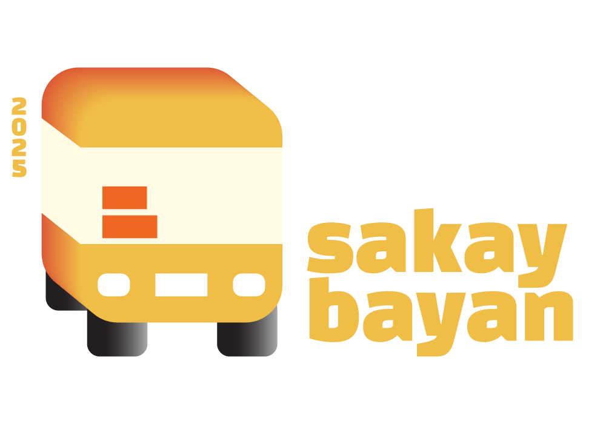
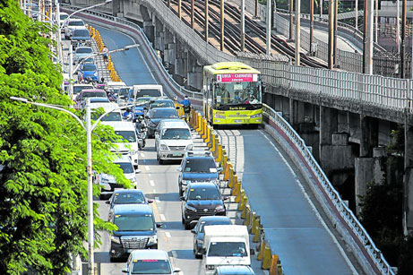
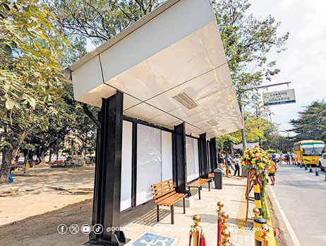
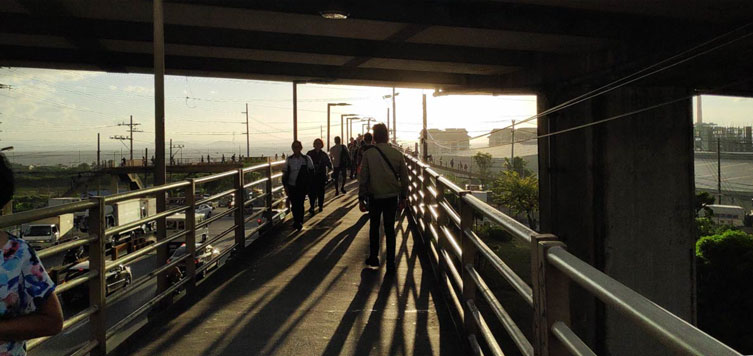

NEWS AND ANNOUNCEMENTS


STORIES AND COMMUNITIES

A non-profit facebook group advocating for the improvement of Philippine transportation systems, amplifying commuter voices, and sharing local and global public transit developments.